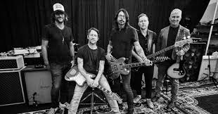

Sobre a Banda
Formação
Foo Fighters é uma banda americana de rock formada em 1994, em Seattle, Washington. A banda foi fundada pelo ex-baterista do Nirvana, Dave Grohl, como um projeto de um homem só, após a dissolução do Nirvana, devido ao suicídio de Kurt Cobain. O projeto recebeu o nome de Foo Fighter, um apelido cunhado pelos pilotos de aviões estadunidenses para OVNIs e outros fenômenos aéreos. Ao longo de sua carreira o Foo Fighters ganhou 12 prêmios Grammy, sendo quatro vezes o de Melhor Álbum de Rock.[1] Eles foram introduzidos no Rock and Roll Hall of Fame em 2021, seu primeiro ano de elegibilidade.
Antes do lançamento do álbum de estreia, em 1995, Foo Fighters, que apresentava Dave Grohl como o único membro oficial, recrutou o baixista Nate Mendel e o baterista William Goldsmith, ambos ex-Sunny Day Real Estate, e também o guitarrista de turnê do Nirvana, Pat Smear. A banda começou com apresentações em Portland, Oregon. Goldsmith saiu durante a gravação do segundo álbum, The Color and the Shape (1997), por discordâncias a respeito da bateria, a maioria das partes dela foram regravadas por Grohl. Smear deixou a banda logo depois, mas apareceu com frequência como convidado a partir de 2005, voltando a ser um membro oficial em 2010.
Smear e Goldsmith foram substituídos por Franz Stahl e Taylor Hawkins; Stahl foi demitido antes da gravação do terceiro álbum do grupo, There Is Nothing Left to Lose (1999). A banda continuou brevemente como um trio até que Chris Shiflett se juntou na guitarra após a conclusão de There Is Nothing Left to Lose. O Foo Fighters lançou seu quarto álbum, One by One, em 2002. Seguiu-se com o disco duplo In Your Honor (2005), que foi dividido entre músicas acústicas e outras com sonoridade mais pesada. O Foo Fighters lançou seu sexto álbum, Echoes, Silence, Patience & Grace, em 2007.
No sétimo álbum de estúdio do Foo Fighters, Wasting Light (2011), produzido por Butch Vig, Pat Smear voltou a ser creditado como membro oficial. O oitavo álbum, Sonic Highways (2014), foi lançado como trilha sonora da minissérie de televisão dirigida por Grohl. Concrete and Gold (2017) foi o segundo álbum do Foo Fighters a alcançar o número um nos Estados Unidos e seu primeiro álbum de estúdio a apresentar o tecladista de longa data e turnê, Rami Jaffee, como membro oficial. Em 2021, a banda lançou seu décimo álbum, Medicine at Midnight. Em 25 de março de 2022, o baterista Taylor Hawkins foi encontrado morto em seu quarto de hotel, em Bogotá, Colômbia. A causa da morte não foi divulgada.
História
Histórico e primeiros Demos (1990–1994)
Em 1990, Dave Grohl entrou para a banda grunge Nirvana como baterista. Nesse período, ele levava uma guitarra com ele e compunha músicas, mas ficava muito intimidado para compartilhá-las com a banda; ele era "incrédulo" com a qualidade com as músicas escritas pelo vocalista Kurt Cobain.[3] Grohl as vezes reservava tempo de estúdio para gravar demos e covers, lançando um álbum de demos, Pocketwatch, sob o pseudônimo "Late!" em 1992.
No periodo em que o Nirvana se desfez após a morte de Cobain em 1994, Grohl recebeu ofertas para trabalhar com vários artistas; rumores na imprensa indicavam que ele poderia se juntar ao Pearl Jam.[5] Grohl quase aceitou uma posição como baterista na banda Tom Petty and the Heartbreakers. Segundo ele, "Eu deveria me juntar a outra banda e ser baterista pelo resto da minha vida. Achei que preferia fazer o que ninguém esperava que eu fizesse". Grohl entrou no estúdio Robert Lang em outubro de 1994 para gravar 15 de suas próprias canções.[6] Com exceção de uma parte de guitarra em "X-Static", tocada por Greg Dulli do Afghan Whigs, Grohl tocou todos os instrumentos e cantou todos os vocais.[7] Ele concluiu a gravação do material de um álbum inteiro em cinco dias e distribuiu cópias em cassete das sessões para seus amigos para ouvir um feedback
Intergrante do Grupo
Dave Grohl
David Eric Grohl (Warren, 14 de janeiro de 1969) é um músico e compositor norte-americano. É o fundador, vocalista e guitarrista da banda Foo Fighters. E também ex-baterista das bandas Nirvana, Queens of the Stone Age e Them Crooked Vultures. Por ser extremamente reconhecido inicialmente como baterista do Nirvana (antes do Foo Fighters), foi considerado o 27º maior baterista de todos os tempos pela revista Rolling Stone. No ano de 2003, Grohl casou com Jordyn Blum, e 3 anos depois, teve sua primeira filha Violet Maye Grohl
Chris Shiflett
Christopher Aubrey Shiflett nascido em 6 de maio de 1971) é um músico americano. Ele é o guitarrista principal da banda de rock Foo Fighters , à qual ingressou em 1999 após o lançamento do terceiro álbum da banda, There Is Nothing Left to Lose (1999). Shiflett também foi membro das bandas de punk rock No Use for a Name (1995–1999) e Me First and the Gimme Gimmes (1995–2019).
Embora seja principalmente guitarrista e backing vocal, Shiflett também liderou bandas como Jackson United e Chris Shiflett & the Dead Peasants. Ele também fez vários álbuns solo; seu terceiro, Lost at Sea , foi lançado em outubro de 2023. Em 2021, ele foi introduzido no Rock and Roll Hall of Fame como membro do Foo Fighters.
Pat Smear
Georg Albert Ruthenberg (Los Angeles, 5 de agosto de 1959) mais conhecido como Pat Smear, é um músico estadunidense. Fez parte da banda de punk rock The Germs e tocou com o Nirvana em algumas apresentações entre 1993 e 1994, participando inclusive do MTV Unplugged in New York[1] e do álbum ao vivo From the Muddy Banks of the Wishkah. Hoje em dia é um dos membros da banda Foo Fighters, sendo o terceiro guitarrista.
Smear nasceu em West, Los Angeles, no dia 05 de agosto de 1959. E além de integrar o Foo Fighters é também é conhecido por aparecer regularmente na MTV em desfiles de moda, como o “House of Style”; por fazer parte do mundo da moda, Pat tornou-se amigo da supermodelo Cindy Crawford.
Rami Jaffee
Rami Jaffee (nascido em 11 de março de 1969) é um músico americano, tecladista das bandas Foo Fighters e The Wallflowers. Ele trabalhou com muitos artistas, incluindo Pete Yorn, Soul Asylum, Stone Sour, Joseph Arthur e Coheed and Cambria.
Nate Mendel
Nate Mendel (Richland, Washington, 2 de dezembro de 1968) é um músico estadunidense, conhecido por tocar baixo na banda de rock alternativo americana Foo Fighters. Também é conhecido por ser o baixista da banda Sunny Day Real Estate.
Josh Freese
Josh Freese (Orlando, 25 de dezembro de 1972[1]) é um baterista e compositor estadunidense com passagens por diversas bandas, muitas delas gravou apenas álbuns de estúdio, portanto poucas vezes chegou a ser considerado um membro oficial delas. Josh é muito requisitado como baterista substituto ou de estúdio, com mais de 2500 gravações.
Nascido na Flórida, mas sempre viveu na Califórnia, foi influenciado pelo pai maestro da banda da Disneylândia e mãe pianista, começou a tocar bateria aos sete anos de idade. Aos doze já tocava profissionalmente na Disneylândia, e aos quinze já fazia turnês, com Dweezil Zappa (filho de Frank Zappa). Mais tarde começou a tocar na banda The Vandals. Atualmente é membro oficial das bandas The Vandals, Devo e A Perfect Circle, mas também está sempre participando de turnês e gravações de estúdio como membro adicional em outras bandas ou cantores solo.
Discografia

Álbum de estreia (1994-1995)
Em 1994, Grohl formou uma banda para iniciar a gravação do primeiro álbum. Ele conversou com o baixista do Nirvana, Krist Novoselic, sobre se juntar ao grupo, mas eles decidiram em conjuntou que não seria bom trabalhar novamente juntos; Grohl disse que seria "realmente natural" para eles trabalharem juntos, mas teria sido "estranho" para qualquer um que trabalhasse junto e colocaria mais pressão sobre Grohl.[11] Em vez disso, Grohl recrutou o baixista Nate Mendel e o baterista William Goldsmith, ambos do grupo Sunny Day Real Estate, recentemente dissolvido em Seattle. O guitarrista de turnê do Nirvana, Pat Smear, se juntou como segundo guitarrista.[6] Grohl licenciou o álbum para a Capitol Records, mas lançou em seu novo selo, Roswell Records
O Foo Fighters fez sua estreia pública ao vivo em 23 de fevereiro de 1995, no Jambalaya Club em Arcata, Califórnia, seguido por apresentações no Satyricon em Portland em 3 de março e no Velvet Elvis em Seattle em 4 de março. O show de 3 de março fez parte de uma ação beneficente para a ajudar a investigação do estupro e assassinato da cantora da banda The Gits, Mia Zapata. Inicialmente, Grohl se recusou a fazer entrevistas ou fazer turnês em grandes locais para promover o álbum.[6] O Foo Fighters realizou sua primeira grande turnê na primavera de 1995, abrindo para Mike Watt. O primeiro single da banda, "This Is a Call", foi lançado em junho de 1995,[7] e seu álbum de estreia Foo Fighters foi lançado no mês seguinte. "I'll Stick Around", "For All the Cows" e "Big Me" foram lançados como singles subsequentes. A banda passou os meses seguintes em turnê, incluindo sua primeira aparição no Reading Festival na Inglaterra em agosto.
Grohl esperava permanecer anônimo e lançar as gravações em uma tiragem limitada sob o nome Foo Fighters, tirado de "foo fighter", um termo da Segunda Guerra Mundial para objetos voadores não identificados.[6] Ele esperava que o nome levasse os ouvintes a supor que a música foi feita por várias pessoas. Ele disse mais tarde: "Se eu realmente considerasse este projeto como uma carreira, provavelmente teria chamado de outra coisa, porque é o nome de banda mais estúpido do mundo."[8] A fita demo circulou na indústria, criando interesse entre gravadoras
The Colour and the Shape (1996–1997)
Após a turnê na primavera de 1996, o Foo Fighters entrou no Bear Creek Studio em Woodinville, Washington, com o produtor Gil Norton para gravar seu segundo álbum. Enquanto Grohl mais uma vez escreveu todas as músicas, o resto da banda colaborou nos arranjos. Com as sessões quase concluídas, Grohl levou as mixagens brutas para Los Angeles, com a intenção de terminar suas partes de vocal e guitarra. Durante este processo, Grohl percebeu que não estava feliz com a bateria e substituiu a maioria das faixas de bateria de Goldsmith pelas suas próprias.[12] Embora Grohl esperasse que Goldsmith ainda tocasse na turnê, Goldsmith se sentiu traído e deixou a banda.
Precisando de um substituto para Goldsmith, Grohl entrou em contato com o baterista de turnê de Alanis Morissette, Taylor Hawkins, pedindo-lhe uma recomendação de algum músico. Para sua surpresa, Hawkins se ofereceu para ingressar na banda. O baterista fez sua estreia com o grupo antes do lançamento de seu segundo álbum, The Color and the Shape, em maio de 1997. O álbum incluía os singles "Monkey Wrench", "Everlong", "My Hero" e "Walking After You"
Pat Smear deixou o Foo Fighters em 1997, alegando exaustão e esgotamento e foi substituído pelo ex-colega da banda de Grohl, Franz Stahl. Ambos tocaram juntos no Scream.[15] Franz Stahl se apresentou na tour do Foo Fighters nos meses seguintes e apareceu em duas faixas gravadas para trilhas sonoras de filmes, uma regravação de "Walking After You" para The X-Files e "A320" para Godzilla. A gravação lado B do single "My Hero", chamada "Dear Lover", apareceu no filme de terror Scream 2. A turnê do álbum The Color and the Shape em 1998 incluiu apresentações no Glastonbury Festival (no palco principal) e no Reading Festival.
There is Nothing Left to Lose (1998-2000)
Em 1998, o Foo Fighters viajou para o estado natal de Grohl, Virgínia, para escrever seu terceiro álbum. No entanto, Grohl e Stahl não conseguiram trabalhar juntos como compositores devido à diferenças pessoais e decidiu demiti-lo; Grohl disse à Kerrang! em 1999, "nessas poucas semanas parecia que nós três estávamos indo em uma direção e Franz a outra". Grohl ficou chateado com a decisão de demitir Stahl, pois os dois eram amigos desde a infância. Pouco depois disso, o baixista Mendel ligou para Grohl buscando reverter a situação. Chegou a dizer que estaria deixando o Foo Fighters para voltar com a antiga banda Sunny Day Real Estate, apenas para tentar reverter sua decisão.[17] O trio restante Grohl, Mendel e Hawkins passou vários meses gravando o terceiro álbum da banda, There Is Nothing Left to Lose, no estúdio caseiro de Grohl. O álbum gerou vários singles, incluindo "Learn to Fly", o primeiro da banda a alcançar a Billboard Hot 100 dos EUA. Outros singles incluíram "Stacked Actors", "Generator", "Next Year" e "Breakout"
Antes do lançamento do álbum, o presidente da Capitol Records, Gary Gersh, foi forçado a sair da gravadora. Devido à história pessoal de Grohl com Gersh, o contrato do Foo Fighters incluía uma "cláusula de homem-chave" que permitia que a banda deixasse a gravadora em caso de saída de Gary Gersh. Eles deixaram a Capitol e assinaram com a RCA, que mais tarde adquiriu os direitos dos álbuns da banda na Capito
Depois que a gravação de There Is Nothing Left to Lose foi concluída, a banda fez um teste com vários guitarristas em potencial e escolheu Chris Shiflett, que tocou com Me First and the Gimme Gimmes e a banda punk da Califórnia No Use for a Name. Shiflett, inicialmente, se juntou como guitarrista de turnê, mas alcançou status de guitarrista oficial antes da gravação do quarto álbum do grupo.
Em janeiro de 2000, Nate Mendel liderou um show beneficente em Hollywood para o grupo negacionista da AIDS "Alive & Well AIDS Alternatives", com um discurso da fundadora Christine Maggiore e cópias gratuitas de seu livro auto-publicado "What If Everything You Thought You Know About AIDS Was Wrong?" (E se tudo o que você achava que sabia sobre a AIDS estivesse errado? em tradução livre).[20][21] Além disso, o site oficial da banda apresentava uma seção dedicada a Alive & Well.[22] Sandra Thurman, então diretora do Escritório de Política Nacional de AIDS nos EUA, declarou que este era um "comportamento extraordinariamente irresponsável" porque "não há dúvida sobre a ligação entre HIV e AIDS na respeitada comunidade científica".[23] Links e referências a Alive & Well foram removidos do site da banda em março de 2003.
Por volta de 2001 o Foo Fighters estabeleceu um relacionamento com a banda Queen, da qual Grohl[24] e Hawkins[25] eram fãs. Em março daquele ano, Grohl e Hawkins os introduziram no Rock and Roll Hall of Fame[26] e se juntaram a eles para tocar o clássico de 1976 "Tie Your Mother Down", com Hawkins tocando bateria ao lado de Roger Taylor.[27] O guitarrista Brian May adicionou uma faixa de guitarra ao segundo cover do Foo Fighters de "Have a Cigar", do Pink Floyd, que apareceu na trilha sonora do filme Missão Impossível 2. Em 2002, o guitarrista May contribuiu com trabalhos de guitarra para Tired of You e um outtake chamado Knucklehead. As bandas se apresentaram juntas em várias ocasiões desde então, incluindo o show do VH1 Rock Honors e do Foo Fighters no Hyde Park.

One by One (2001–2004)
Perto do final de 2001, a banda entrou em estúdio novamente para gravar seu quarto álbum. Depois de passar quatro meses em um estúdio em Los Angeles, o álbum "simplesmente não soava bem" e a banda não tinha confiança de que venderia muito bem. Com o álbum não atingindo suas expectativas em meio a muitas brigas internas, Grohl aceitou se tornar baterista temporário do Queens of the Stone Age no álbum de 2002, Songs for the Deaf. Quando o álbum foi finalizado e a turnê das bandas Queens of the Stone Age e Foo Fighters iniciou, o grupo estava à beira de se separar completamente. Grohl se reuniu com Hawkins, Shiflett e Mendel para tocar no Coachella Festival, alternando dias com Queens of the Stone Age. Hawkins e Grohl debateram sobre retomar o trabalho em One by One e depois de uma performance muito satisfatória no dia seguinte, eles concordaram em ficar juntos. No mês seguinte, o grupo regravou quase todo o álbum (exceto Tired of You) em dez dias no estúdio caseiro de Grohl em Alexandria, Virgínia.[19] A versão original de One by One, referida pela banda como Million Dollar Demos, nunca foi lançada em sua totalidade, embora sete faixas tenham vazado online em 2012 e 2015.
O álbum foi lançado em outubro de 2002 sob o título One by One. Os singles do álbum incluíam "All My Life", "Times Like These", "Low" e "Have It All". A turnê do álbum incluiu uma apresentação nos Festivais de Reading e Leeds de 2002.
Depois que a gravação de There Is Nothing Left to Lose foi concluída, a banda fez um teste com vários guitarristas em potencial e escolheu Chris Shiflett, que tocou com Me First and the Gimme Gimmes e a banda punk da Califórnia No Use for a Name. Shiflett, inicialmente, se juntou como guitarrista de turnê, mas alcançou status de guitarrista oficial antes da gravação do quarto álbum do grupo.
Durante a maior parte de sua história, a banda optou por ficar longe da esfera política. No entanto, em 2004, ao saber que a campanha presidencial de George W. Bush estava usando "Times Like These" em comícios, Grohl decidiu dar seu apoio público à campanha de John Kerry, dizendo: "Não há como impedir o presidente de tocar suas músicas, então eu saí e toquei para o pessoal de John Kerry, onde eu pensei que a mensagem faria mais sentido."[31] A banda inteira se juntou a Grohl para uma apresentação no Arizona, coincidindo com um dos debates presidenciais.
In Your Honor e Skin and Bones (2005–2006)
Tendo passado um ano e meio em turnê com o álbum One by One, Dave Grohl não queria se apressar em gravar outro álbum do Foo Fighters. Inicialmente Grohl pretendia escrever material acústico sozinho, mas o projeto acabou envolvendo toda a banda.[33] Para gravar seu quinto álbum, a banda mudou-se para Los Angeles e construiu um estúdio de gravação, apelidado de Studio 606 West. Grohl insistiu que o álbum fosse dividido em dois discos – um cheio de músicas de rock, o outro com faixas acústicas.[34] In Your Honor foi lançado em junho de 2005. Os singles do álbum incluíam "Best of You", "DOA", "Resolve" e "No Way Back/Cold Day in the Sun"
Durante setembro e outubro de 2005, a banda saiu em turnê com a banda Weezer na "Foozer Tour".[36] O Foo Fighters fez uma apresentação de destaque nos Festivais de Reading e Leeds de 2005. Em 17 de junho de 2006, o Foo Fighters realizou seu maior show fora de festivais no Hyde Park de Londres. Lemmy do Motörhead se juntou à banda no palco para cantar "Shake Your Blood" do álbum Probot de Dave Grohl. Como uma performance surpresa, Brian May e Roger Taylor do Queen apareceram para tocar We Will Rock You e Tie Your Mother Down.
Para alavancar a divulgação de In Your Honor, a banda organizou uma curta turnê acústica no verão de 2006. Membros que haviam tocado com eles no final de 2005 reintegraram o grupo. Pat Smear retornou à guitarra, Petra Haden no violino e backing vocals, Drew Hester na percussão, e Rami Jaffee do The Wallflowers no teclado e piano. Enquanto grande parte do setlist se concentrou na metade acústica de In Your Honor, a banda também aproveitou a oportunidade para tocar músicas menos conhecidas, como "Ain't It The Life", "Floaty" e "See You". A banda também tocou "Marigold", uma música do cassete Pocketwatch de Dave Grohl, mais conhecida como "lado B" do Nirvana
Em novembro de 2006, a banda lançou seu primeiro CD ao vivo, Skin and Bones, com quinze apresentações capturadas em três noites em Los Angeles
Echoes, Silence, Patience & Grace e Greatest Hits (2007–2009)
Em 25 de setembro de 2007, a banda lançou o álbum Echoes, Silence, Patience & Grace, pela RCA Records. Nesse novo trabalho eles voltam a trabalhar com o produtor Gil Norton, que não produzia um disco do Foo Fighters desde 1997. Entre os singles de maiores sucessos estão, "The Pretender", "Long Road to Ruin", "Cheer Up, Boys (Your Make Up Is Running)" e "Let It Die".
Em 2008 o álbum "Echoes, Silence, Patience & Grace" ganhou o Grammy na categoria "Melhor Álbum de Rock". Além disso, uma das canções desse álbum, "The Pretender", ganhou o Grammy de "Melhor Performance Hard Rock".
Em 3 de novembro de 2009, o Foo Fighters lançou a coletânea Greatest Hits, que inclui as músicas de maior sucesso da banda e duas canções inéditas, "Wheels" e "Word Forward", além de uma versão acústica de "Everlong".
Wasting Light (2011-2012)
Após o fim da turnê de Echoes, Silence, Patience and Grace, Grohl iniciou o projeto Them Crooked Vultures, e em meio à turnê australiana da banda fez planos para o próximo álbum dos Foo Fighters: seria gravado na garagem de sua casa em Encino com apenas equipamento analógico, o produtor seria Butch Vig - com quem Grohl fizera o álbum mais famoso do Nirvana, Nevermind - e a gravação seria acompanhada de um documentário sobre a banda. O álbum resultante, Wasting Light, foi lançado em 2011, marcando o retorno definitivo de Pat Smear para banda. O filme Back and Forth também surgiu no mesmo ano. Wasting Light se tornou o primeiro álbum da banda a liderar a parada norte-americana e foi grande sucesso de público e crítica.[
Em 2 de outubro de 2012, após encerrar uma longa turnê mundial, Dave Grohl confirmou que o Foo Fighters entraria em hiato por tempo indefinido
Dave Grohl usou esse tSmpo para produzir Sound City, um documentário sobre o estúdio localizado em Los Angeles - Califórnia que foi palco da gravação do álbum Nevermind do Nirvana, dentre outros. O projeto reuniu participação de vários músicos, como Paul Mccartney, Stevie Nicks e ex-integrantes da banda Nirvana, que formaram um supergrupo denominado The Sound City Players a fim de divulgar o documentário
Sonic Highways (2013-2015)
Apesar do Foo Fighters ter entrado em hiato, Dave Grohl declarou em janeiro de 2013 que a banda tinha um plano para seu próximo álbum já intitulado de Sonic Highways e que já começara a escrever material para este.[43] Em 21 de fevereiro de 2013, Dave voa para a América para começar a trabalhar no álbum sucessor de Wasting Light
Em 16 de janeiro de 2014, a banda posta uma foto em seu perfil na rede social Instagram de fitas analógicas das primeiras gravações do álbum. Dave Grohl já havia revelado em novembro de 2013, em entrevista à revista Rolling Stone, que o álbum seria gravado de uma maneira diferente, nada convencional. Mas manteve o mistério: "Eu tenho uma ideia que acho que nunca foi feita no passado. Não queremos contar o segredo ainda, mas está acontecendo", comentou.
Em 30 de julho de 2014, Butch Vig, produtor do álbum, publica em seu perfil no twitter que o novo álbum está oficialmente finalizado. O álbum veio acompanhado de uma série no canal HBO denominada Sonic Highway, lançada em 17 de outubro de 2014. A série, dirigida por Dave Grohl, tem 8 episódios e documenta a gravação do álbum que passa por uma cidade diferente a cada episódio gravando uma nova faixa.
Em agosto, foram divulgados a data de lançamento (10 de novembro), o título, a capa e os nomes das oito faixas do disco.
Saint Cecilia EP e Concrete and Gold (2015-2019)
Em 23 de novembro de 2015, o Foo Fighters lançou um novo EP, intitulado Saint Cecilia. Este EP homenageia as vitímas dos Atentados de 13 de novembro, na cidade de Paris, principalmente na casa de shows Bataclan, onde tocava a banda Eagles of Death Metal, com a qual Dave Grohl, vocalista da banda tem relação. Tal EP pode ser baixado de graça.
Junto com esse álbum, foi lançada uma carta,[45] na qual Dave Grohl fala muito sobre um possível hiato ou fim da banda.[46] Grohl anunciou que a banda passaria a maior parte de 2017 gravando seu nono álbum de estúdio.[47] Em 1 de junho de 2017 a banda lança seu novo single Run. Em 23 de agosto é lançado o segundo single de Concrete and Gold, The Sky Is a Neighborhood.
Medicine at Midnight e Bee Gees (2019 - 2021)
Em outubro de 2019, a banda anunciou que estava gravando seu décimo álbum de estúdio baseado em gravações demos de Grohl.[48][49] Em novembro de 2019, a banda começou a lançar uma série de EPs sob o nome de Foo Files, em grande parte consistindo em lados B lançados anteriormente e apresentações ao vivo. Em fevereiro de 2020, Grohl anunciou que o novo álbum estava completo,[50] mas em maio, foi adiado indefinidamente por causa da pandemia do COVID-19, dizendo: "Nós meio que arquivamos por enquanto para descobrir exatamente quando será lançado.
A partir de novembro de 2020, a divulgação do álbum iniciou. Seu título, Medicine at Midnight, e a data de lançamento, 5 de fevereiro de 2021, foram anunciados. A banda lançou três singles antes do álbum: "Shame Shame", "No Son of Mine" e "Waiting on a War".[52] Em janeiro, a banda se apresentou na posse presidencial dos EUA de Joe Biden.[53] Em 10 de fevereiro de 2021, o Foo Fighters foi anunciado como um dos indicados ao Rock and Roll Hall of Fame de 2021 em seu primeiro ano de elegibilidade, já que seu álbum de estreia havia sido lançado 25 anos antes.[2] Em 12 de maio de 2021, Foo Fighters foi anunciado como um dos 6 artistas indicados
Para o Record Store Day em 17 de julho de 2021, o Foo Fighters lançou um álbum de covers de música disco chamado Hail Satin, com o pseudómino de Dee Gees. O álbum contém quatro covers de Bee Gees, um cover de "Shadow Dancing" de Andy Gibb, além de cinco versões ao vivo de faixas de Medicine at Midnigh
But Here We Are (2023 - Atualmente)
But Here We Are é o décimo primeiro álbum de estúdio da banda estadunidense de rock, Foo Fighters,[1][2][3] cujo lançamento ocorreu no dia 2 de junho de 2023. Produzido por Greg Kurstin e pela própria banda, é o primeiro álbum de estúdio desde o falecimento repentino de seu baterista de longa data, Taylor Hawkins, em março de 2022. O vocalista Dave Grohl tocou e gravou todas as faixas de bateria do álbum na ausência de Hawkins. Quatro singles, "Rescued", "Under You", "Show Me How" e "The Teacher" foram lançados antes do álbum, Josh Freese fora anunciado como substituto de Hawkins após a turnê de lançamento do álbum.
Filmografia
Documentário
Back and Forth e Sound City (2011 - 2013)
Back and Forth é um documentário de 2011 da banda Foo Fighters, dirigido por James Moll. O filme apresenta a história da banda, e recebe o título de uma faixa do Foo Fighters de seu sétimo álbum estúdio, Wasting Light.[
Sound City é o primeiro documentário dirigido pelo músico Dave Grohl. Lançado em 2013, conta a história do Sound City Studios em Van Nuys, Los Angeles, que foi fechado em 2011.
Filme de Terror (Comedia)
Studio 666 (2022)
Em 25 de fevereiro de 2022, o Foo Fighters lançou um filme de terror e comédia chamado Studio 666, dirigido por BJ McDonnell. É estrelado pelos membros da banda como eles mesmos, ao lado de Will Forte, Whitney Cummings, Jeff Garlin e Jenna Ortega.[56] No filme, os Foo Fighters tentam gravar um álbum em uma mansão assombrada; Grohl é possuído por um espírito demoníaco e os membros da banda são mortos um por um.[56][57] As gravações ocorreram na mesma mansão em que os Foo Fighters gravaram Medicine at Midnight.[56] O Studio 666 recebeu críticas mistas e teve um desempenho ruim em sua semana de estreia.[58] Grohl lançou um EP de músicas do filme, "Dream Widow", em 25 de março de 2022
Morte de Taylor Hawkins (1972-2022)
Em 26 de março de 2022, a banda anunciou através de suas redes sociais a morte do baterista Taylor Hawkins em Bogotá, Colômbia, onde se apresentariam para o Festival Estéreo Picnic. A data provável da morte foi no dia 25 de março de 2022.[60] Segundo a Procuradoria-Geral da Colômbia, o exame toxicológico realizado do corpo do músico apontou ao menos dez substâncias diferentes, entre as quais maconha, opióides, antidepressivos tricíclicos e benzodiazepínicos.[61][62][63] Seu último show ocorreu na edição argentina do festival Lollapalooza em 20 de março de 2022[64] A banda se apresentaria no dia seguinte na edição brasileira do Festival Lollapalloza, porém todas as apresentações da turnê sul-americana foram canceladas
Contato
Fale Conosco
Nós Acompanhe


Vem até nós
Rua Dave Grohl Alley, 1969 - Warren - Ohio - EUA